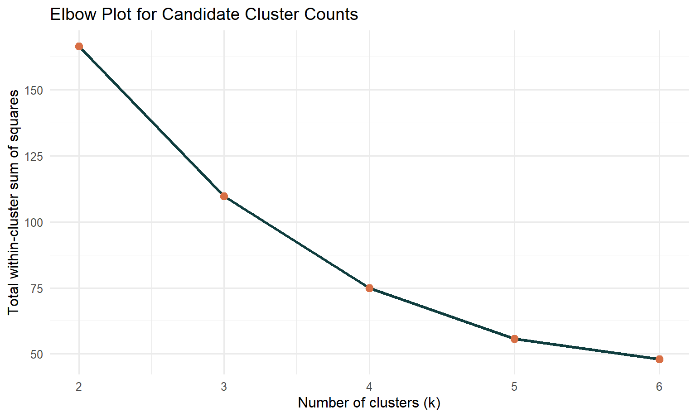
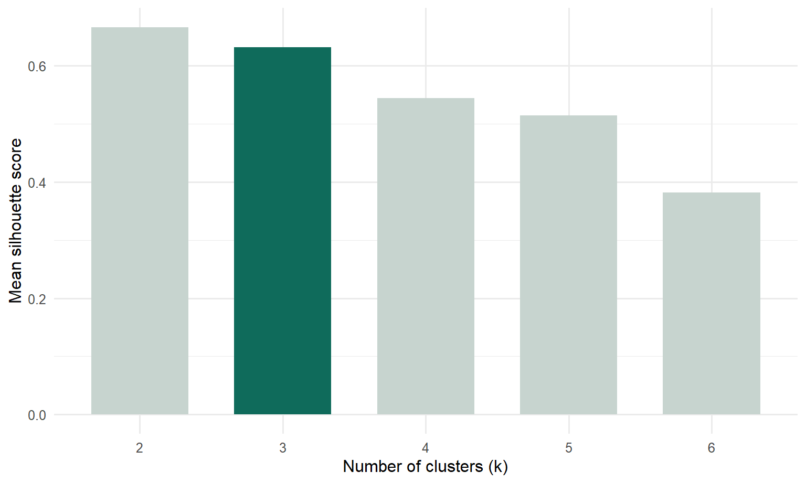

Monthly tourism market states in Singapore’s recovery
1. Introduction
This prototype now follows a tighter analytical rhythm: one focused code block, one direct output, and one explanation. The goal is to keep the page readable and fully reproducible at the same time.
The research question is:
Can monthly tourism observations be grouped into a few interpretable market states defined by visitor arrivals, China’s market share, hotel occupancy, and length of stay?
The method remains k-means clustering on standardized monthly indicators, because this dataset is continuous and month-based rather than respondent-based.
2. Load Packages
The first step is to load the packages used in this prototype.
The package table confirms that the required tools for data import, transformation, clustering, and reporting are available in the current project environment.
3. Import The Cleaned Workbook
The clustering module uses the cleaned workbook created for the project, specifically the analysis_ready_all sheet.
This preview shows that the cleaned sheet already contains the time period label, China’s market share, and the capped stay-duration variable required for the clustering workflow.
5. Select The Clustering Variables
Following the project plan, the model uses four continuous monthly variables:
The selected feature set has no missing values after filtering, so all 110 months can be used in the clustering stage.
6. Check The Period Coverage
The clustering result should represent the three main phases of the tourism market: pre-COVID, COVID shock, and recovery.
period_table <- cluster_input |>count(period, name ="Months")knitr::kable(period_table, align =c("l", "r"))
period
Months
covid_shock
23
pre_covid
38
recovery
49
The period table confirms that the usable monthly observations still cover all three phases, which is important for interpreting the final cluster states historically.
7. Standardize The Modeling Variables
K-means depends on Euclidean distance, so the four variables must be standardized before clustering. Otherwise, visitor counts would dominate the distance calculation simply because they are measured on a much larger scale.
The means are approximately zero and the standard deviations are approximately one, so the standardized feature matrix is ready for clustering.
8. Generate The Elbow Plot
The first diagnostic for cluster selection is the elbow method. It compares how the within-cluster sum of squares changes as k increases.
candidate_k <-2:6distance_matrix <-dist(cluster_matrix)model_metrics <-bind_rows(lapply(candidate_k, function(k) {set.seed(42) fit <-kmeans(cluster_matrix, centers = k, nstart =25) sil <-silhouette(fit$cluster, distance_matrix)data.frame(k = k,tot_withinss = fit$tot.withinss,silhouette =mean(sil[, "sil_width"], na.rm =TRUE) )}))ggplot(model_metrics, aes(x = k, y = tot_withinss)) +geom_line(color ="#0f3d3e", linewidth =1.1) +geom_point(color ="#d86f45", size =2.6) +scale_x_continuous(breaks = candidate_k) +labs(title ="Elbow Plot for Candidate Cluster Counts",x ="Number of clusters (k)",y ="Total within-cluster sum of squares" ) +theme_minimal(base_size =12)

Figure 1
The elbow bends clearly by around k = 3, which suggests that moving beyond three clusters yields diminishing returns in compactness.
9. Generate The Silhouette Plot
The second diagnostic is the mean silhouette score, which measures how well-separated the clusters are.
ggplot(model_metrics, aes(x =factor(k), y = silhouette, fill = k ==3)) +geom_col(width =0.68, show.legend =FALSE) +scale_fill_manual(values =c("TRUE"="#0f6b5b", "FALSE"="#c7d4cf")) +labs(title ="Mean Silhouette Score by Candidate k",x ="Number of clusters (k)",y ="Mean silhouette score" ) +theme_minimal(base_size =12)

Figure 2
The silhouette score is highest at k = r model_metrics$k[which.max(model_metrics$silhouette)], but k = 3 remains a defensible choice because it creates a more meaningful market-state interpretation than a simple two-cluster split.
10. Compare The Cluster Selection Metrics
The two diagnostics can be read together in tabular form before fixing the final model.
Taken together, the diagnostics support a reasonable interpretive compromise: use k = 3 so that the final solution can distinguish shock months, transition months, and stronger performance months.
11. Fit The Final K-Means Model
Once k = 3 is selected, the final model can be estimated and the month-level cluster assignments can be generated.
Because the centers are standardized, positive values indicate above-average conditions and negative values indicate below-average conditions. This table is useful for checking the internal logic of the state labels.
13. Plot The Cluster Separation
The next figure projects the standardized monthly observations onto two principal components so that the three cluster states can be viewed in a reduced feature space.
The scatter plot shows that the market states are not randomly mixed. The strongest separation appears between the pandemic shock months and the high-performance months, while the recovery transition months sit between them.
14. Compare The State Profiles
To make the clusters easier to interpret, the next table summarizes the average market conditions inside each inferred state.
This table gives the business interpretation of the clusters. The shock state combines extremely low arrivals and low occupancy with long stays, the transition state shows partial recovery, and the high-performance state combines strong arrivals with high hotel occupancy.
15. Plot The State Timeline
The clustering result also needs to be anchored back to historical time.
The timeline shows that the clustering result is historically coherent: pandemic shock months cluster inside the disruption period, recovery transition months bridge the early rebound, and high-performance months dominate the pre-COVID and later recovery periods.
16. Compare States Across Periods
The final historical check is to cross-tabulate the inferred states against the predefined project periods.
This table confirms the storytelling logic of the model. In the current data, the high-performance state contains 38 pre-COVID months and 44 recovery months, the pandemic shock state contains 15 COVID-shock months, and the recovery transition state spans 8 COVID-shock months plus 5 recovery months.
17. Define The UI Parameters
The prototype also needs to specify the controls that should be exposed later in the Shiny module.
ui_parameter_table <-data.frame(Parameter =c("period_filter","feature_cols","k_value","random_seed","scale_features","run_cluster","download_clusters" ),UI_component =c("checkboxGroupInput","checkboxGroupInput","sliderInput","numericInput","checkboxInput","actionButton","downloadButton" ),Default =c("all periods","all default cluster features","3","42","TRUE","click to run","shown after model run" ),Purpose =c("filter months by study period","choose the variables used for clustering","compare alternative cluster counts","keep the result reproducible","toggle z-score standardization","avoid unnecessary recomputation","export month-level state assignments" ))knitr::kable(ui_parameter_table, align =c("l", "l", "l", "l"))
Parameter
UI_component
Default
Purpose
period_filter
checkboxGroupInput
all periods
filter months by study period
feature_cols
checkboxGroupInput
all default cluster features
choose the variables used for clustering
k_value
sliderInput
3
compare alternative cluster counts
random_seed
numericInput
42
keep the result reproducible
scale_features
checkboxInput
TRUE
toggle z-score standardization
run_cluster
actionButton
click to run
avoid unnecessary recomputation
download_clusters
downloadButton
shown after model run
export month-level state assignments
The parameter table keeps the module focused on the minimum controls needed for a meaningful prototype.
18. Define The UI Outputs
The last step is to specify what the Shiny module should return to the user.
ui_output_table <-data.frame(Output =c("cluster_plot","profile_table","timeline_plot","silhouette_value","assignment_table","download_clusters" ),Format =c("ggplot2","DT::datatable","ggplot2","value box / text","DT::datatable","CSV download" ),Purpose =c("show separation between market states","compare cluster averages","link states back to the historical timeline","report model quality","preview month-level assignments in the app","support downstream analysis" ))knitr::kable(ui_output_table, align =c("l", "l", "l"))
Output
Format
Purpose
cluster_plot
ggplot2
show separation between market states
profile_table
DT::datatable
compare cluster averages
timeline_plot
ggplot2
link states back to the historical timeline
silhouette_value
value box / text
report model quality
assignment_table
DT::datatable
preview month-level assignments in the app
download_clusters
CSV download
support downstream analysis
These outputs preserve the same analytical story developed in the prototype report, so the eventual Shiny module can remain consistent with the coursework write-up.
19. Conclusion
This revised page now follows the tighter structure you asked for: one block of code, one immediate output, and one explanation. The analytical conclusion is unchanged, but the workflow is now much easier to inspect and present:
monthly observations do not form one smooth market pattern,
they separate into interpretable tourism states,
and those states are jointly shaped by visitor volume, China’s market share, hotel occupancy, and length of stay.